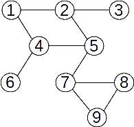
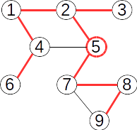
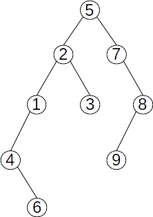
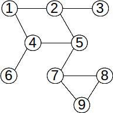
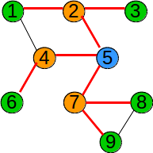
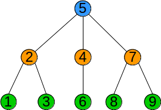

Terminologie
Prin parcurgerea unui graf neorientat se înţelege examinarea în mod sistematic a vârfurilor, plecând dintr-un vârf dat start, astfel încât fiecare vârf accesibil din start pe muchii incidente două câte două să fie vizitat o singură dată. Trecerea de la un vârf x la altul se face prin examinarea, într-o anumită ordine a vecinilor săi.
Parcurgerile grafurilor sunt frecvent utilizate în rezolvarea multor probleme. Animația de mai jos prezintă modul în care se parcurge un labirint folosind mecanisul parcurgerii în adâncime:

Parcurgerea în adâncime (DFS)
Parcurgerea în adâncime este foarte asemănătoare cu modul în care un turist vizitează un oraș în care sunt obiective turistice (vârfurile grafului) și căi de acces între obiective (muchiile). Vizitarea orașului va avea loc din aproape în aproape. Se pleacă de la un obiectiv de pornire, se continuă cu un obiectiv învecinat cu acesta, apoi unul învecinat cu al doilea, etc.
Parcurgerea în adâncime se face astfel:
- Se începe cu un vârf inițial x, care este în acest moment vârf curent.
- Vârful x se vizitează. Se determină primul său vecin nevizitat y al lui x, care devine vârf curent.
- Apoi se vizitează primul vecin nevizitat al lui y, şi aşa mai departe, mergând în adâncime, până când ajungem la un vârf care nu mai are vecini nevizitați. Când ajungem într-un astfel de vârf, ne întoarcem la vârful din care am ajuns în acesta (părintele).
- Dacă acest vârf mai are vecini nevizitați, alegem următorul vecin nevizitat al său și continuam parcurgerea în același mod.
- Dacă nici acest vârf nu mai are vecini nevizitați, revenim în vârful său părinte și continuăm în același mod, până când toate vârfurile accesibile din vârful de start sunt vizitate.
Observație: Dacă graful nu este conex, nu se vor vizita toate vârfurile.
Exemplu:
|  |
| Parcurgerea din nodul 5: 5 2 1 4 6 3 7 8 9 |
Pentru implementarea algoritmului se foloseşte un vector caracteristic pentru memorarea faptului că un anume vârf a fost sau nu vizitat, la un anumit moment al parcurgerii:
V[i] = 0, vârful i nu a fost (încă) vizitatV[i] = 1, vârful i a fost vizitat
Pentru a determina ordinea în care se parcurg nodurile care pot fi vizitate, se folosește o stivă:
- se analizează mereu nodurile adiacent cu nodul din vârful stivei
- dacă pentru nodul din vârful stivei găsim un vecin nevizitat, adăugăm nodul vecin pe stivă
- dacă pentru nodul din vârful stivei nu mai găsim niciun vecin nevizitat, îl eliminăm de pe stivă
Implementare C++
void DFS(int k)
{
V[k] = 1;
for (int i = 1; i <= n; ++i)
if (A[k][i] == 1 && V[i] == 0)
DFS(i);
}
Arborele de parcurgere
În urma parcurgerii în adâncime, muchiile folosite pentru parcurgere formează un arbore. Acest arbore este graf parțial al grafului dat (dacă graful este conex), și se numește arbore parțial de parcurgere. Arborii de parcurgere ai unui graf sunt diferiți, în funcție de vârful de start.
Exemplu:
| Arborele de parcurgere pentru vârful de start 5 |
|  |
| Acest arbore poate fi privit ca arbore cu rădăcină, rădăcina fiind vârful de start. Pentru graful de mai sus, parcurgerea în adâncime pornind din vârful 5 produce următorul arbore de parcurgere: |
|  |
Acest arbore poate fi stocat în memorie prin intermediul unui vector de tați:
T[k] = 0, vârful k este rădăcina arboreluiT[k] = x, vârful x este tatăl vârfului k
Pentru arborele de mai sus vectorul de tați este:
k: 1 2 3 4 5 6 7 8 9 T[k]: 2 5 2 1 0 4 5 7 8
Implementare C++
void DFS(int k, int tata)
{
V[k] = 1;
T[k] = tata;
for (int i = 1; i <= n; ++i)
if (A[k][i] == 1 && V[i] == 0)
DFS(i, k);
}
Parcurgerea în lățime (BFS)
Se parcurge vârful de start, apoi vecinii acestuia, apoi vecinii nevizitați ai acestora, până când sunt vizitate toate vârfurile accesibile. Practic, pentru a stabili ordinea de vizitare se folosește o coadă, iar pentru a stabili dacă un vârf a fost sau nu vizitat se foloseşte un vector caracteristic.
Algoritmul este:
- adaugăm în coadă vârful inițial și îl vizităm
- cât timp coada este nevidă
- cât timp coada este nevidă
- determinăm vecinii nevizitați ai vârfului extras, îi vizităm și îi adăugăm în coadă
- eliminăm elementul din coadă
Observație: Dacă graful nu este conex, în urma parcurgerii nu se vor vizita toate vârfurile.
Exemplu:

Vârfurile grafului au fost parcurse în ordinea:
5 2 4 7 1 3 6 8 9
În urma parcurgerii în adâncime, muchiile folosite pentru parcurgere formează un arbore. Acest arbore este graf parțial al grafului dat (dacă graful este conex), și se numește arbore parțial de parcurgere. Pentru graful de mai sus, arborele de parcurgere pornind din vârful 5 este:

Acest arbore poate fi considerat arbore cu rădăcină, aceasta fiind chiar vârful de start, 5

În acest caz, odată cu parcurgerea se poate construi și vectorul de tați T[] al arborelui. În acest exemplu el este:
k: 1 2 3 4 5 6 7 8 9 T[k]: 2 5 2 5 0 4 5 7 7
Din vectorul de tați al unui arbore se poate determina ușor pentru un vârf oarecare un lanț de la acel vârf la rădăcina arborelui. Arborii obținuți în urma parcurgerii în lățime au proprietatea că lanțul de la vârful de pornire la oricare vârf accesibil din graf obținut din arborele de parcurgere are lungime minimă.
Implementare C++
void BFS(int k)
{
queue Q;
Q.push(k);
while (!Q.empty())
{
k = Q.front();
T[k] = 1;
fout << k << " ";
Q.pop();
for (int i : G[k])
if (!T[i])
{
Q.push(i);
T[i] = 1;
}
}
}